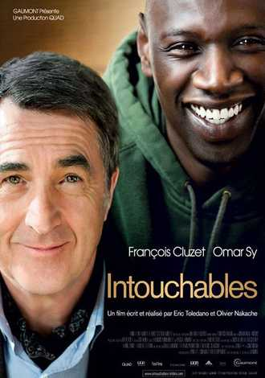

Intouchables
2011 112 min Komedie
Miljonair Philippe is aan een rolstoel gekluisterd. In hartje Parijs woont hij in een kast van een huis. Driss woont daar ver vandaan, in een van de grimmige voorsteden. Verdient de jonge Senegalees zijn geld niet met schimmige zaakjes, dan trekt hij wel een uitkering. Maar wie bijstand wil, moet solliciteren. Plotseling zit Driss met een echte baan opgescheept, als persoonlijke verzorger van Philippe. Met zijn tomeloze energie zet hij Philippe's stijve huishouden binnen de kortste keren op z'n kop. Maar ook Driss' leven zal nooit meer hetzelfde zijn.